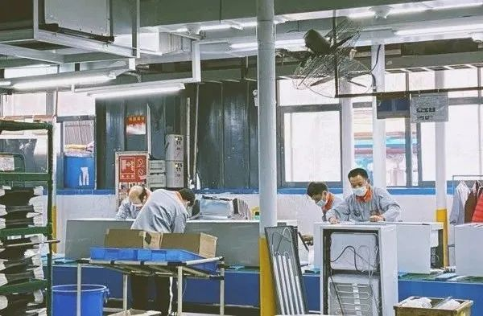

难念的经：温州复工克难记
原文链接 备份链接 2月17日，是温州白名单企业（又称规上企业）正式复工的日子。相比国务院和浙江省规定的复工期限，作为新冠肺炎疫情重灾区的温州，整整晚了7天。以2月10日为时间节点，浙江省以及下辖各市相继出台了稳企业稳经济政策和企业复工的 …
28.02.2020

本文字数：1385，阅读时长大约2分钟
导读：众多参与前程无忧这项“企业复工状况调查”的员工表示，没有工作就没有了收入。调查同时发现，三分之一企业的现金流只能维持1-3个月。
作者 | 第一财经 郭晋晖
一份基于1336家雇主和3850名员工的调查显示，自2月10日正式复工以来，有近三成的企业尚未复工，超过五成的员工渴望尽快恢复正常工作。
众多参与前程无忧这项“企业复工状况调查”的员工表示，没有工作就没有了收入。调查同时发现，三分之一企业的现金流只能维持1~3个月。
万博新经济研究院院长滕泰对第一财经表示，从2月17日起，疫情对经济的影响进入下半场，企业复工、复产条件好转，复产复工速度显著加快。

七成企业复工
前程无忧的调查显示，复工企业数量正在快速增长中，从第一周的53%上升到71.8%。
从行业来看，金融业复工比例最高为89.2%，零售业88.3%，医疗行业86.7%，制造业72.3%，物流业67.8%，房地产业52.3%。
从企业类型看，国有企业复工最早，到岗上班比例最高，员工保障条件也相对较好；互联网行业复工比例最高，目前在家上班的比例高达92%。
同时，大型企业复工比例最高，受访企业中员工规模在2000人以上的复工比例达到84%，员工人数在100人以内雇主复工仅占47%。
工信部数据也显示，全国规模以上工业企业复工率逐步提高，其中浙江已超过90%，江苏、山东、福建、辽宁、广东、江西已超过70%。而中小企业开工率仅接近30%。
前程无忧首席人力资源专家冯丽娟表示，对多数企业而言，复工也许并非难事，但复工之路可能长达数月。

企业招聘同步增长
与复工同步，企业用人的需要开始增长。2月10～21日，前程无忧招聘岗位增加了57万个（一个岗位可能招聘多人），同期投递简历的人数已经超过500万。
2月17～2月21日招聘岗位增幅最快的来自制药/生物工程、医疗设备/器械和快速消费品(食品、饮料、化妆品)，增幅分别比2月10～14日增加了58%，39%和32%。
然而，与去年相比，企业的用人需求明显下降。社会招聘量计划与去年持平和增加的雇主占到57%，暂缓招聘的雇主也占到12%。新增职位数量和简历投递人数是上一年同期的31%和45%。
调查报告称，招聘量减少并不意味着人才获得变得容易。事实上，社会招聘“候选人不足”困扰着现在急于用人的雇主。
首都经济贸易大学中国新就业形态研究中心主任张成刚对第一财经表示，目前就业面临主要问题还是跨省人员流动存在障碍，即使采用“点对点”直达运输方式主要保障重点企业用工，各省大范围铺开成本依然高，下一步要尽快解决劳动者流动以及流动后无法返岗的困局。
在接受访问的3850名员工中，渴望恢复日常工作的受访个体占 54.5% ，远大于“不想工作” （6.9%）与“仍不敢复工”（14.5%）的总和。
制造业恢复快于服务业
这份调查还显示，目前的企业经营几乎都处在“支出大于收入”的阶段，有34%的企业现金流仅能维持1~3个月，21%的企业为3~6个月，8.6%的企业为6~12个月，31.3的企业为一年以上。对于经营的全面恢复，半数以上的雇主认为“一年内可见”。
不同行业受疫情的冲击程度不同，恢复速度也不同。万博新经济研究院最新发布报告称，从结构上看，在经济总量中占比达53%的服务业，不仅受疫情受冲击最大、恢复速度慢，且有些行业的损失不能在下半年弥补，预计服务业2020年一季度增速为-0.1%，上半年增速约为3.7%。其中，餐饮住宿业受冲击最大，预计一季度增速-45.7%，全年增速-11%。
滕泰表示，从非典经验来看，制造业恢复也是快于服务业，当前制造业复工速度也大于服务业，预计一季度制造业还将正增长。因此，下一步“稳增长”的重点应该是服务业。
滕泰建议，货币政策应尽快宣布降准、降息，切实降低企业融资成本；财政政策则要用创新办法打开收支空间，可以加大国有企业分红力度，若按2019年国企利润50%分红，可增加非税收入1.3万亿元。
【推荐阅读】


原文链接 备份链接 2月17日，是温州白名单企业（又称规上企业）正式复工的日子。相比国务院和浙江省规定的复工期限，作为新冠肺炎疫情重灾区的温州，整整晚了7天。以2月10日为时间节点，浙江省以及下辖各市相继出台了稳企业稳经济政策和企业复工的 …
原文链接 备份链接 *************▲*************日本广播协会（NHK）记者采访顺威生产车间负责人。（肖松/图） 全文共2975字，阅读大约需要7分钟。 湾区企业复工复产，还有不少“新招”：补贴员工返工交通费、与 …
原文链接 备份链接 燃财经（ID:rancaijing）原创 作者 | 孟亚娜 编辑 | 凌远川 坐电梯像“吃火锅”，吃饭像“参加高考”，红外线测体温，脚踏式按键开门神器……近日，互联网公司的花式复工火了，网友大呼，太硬核了。 图片来源 …
原文链接 备份链接 “人力短缺是最直接和最普遍的问题” 2月18日晚18点15分，从安徽黄山北站开往杭州东的D5580车次准时出发。这是一趟为杭州复工人员定制的“复工专列”，车上的543名乘客全都是返杭就业人员，他们是当前杭州企业急需 …
原文链接 备份链接 在史晋川看来，政府包飞机、包高铁、派专车去接农民工，可以在短期内缓解企业的用工压力。“但要想从根本上解决用工问题，要深化配套的社会改革，让农民工也享受到当地经济发展的同等好处和权益。” 全文5412字，阅读约需10 …